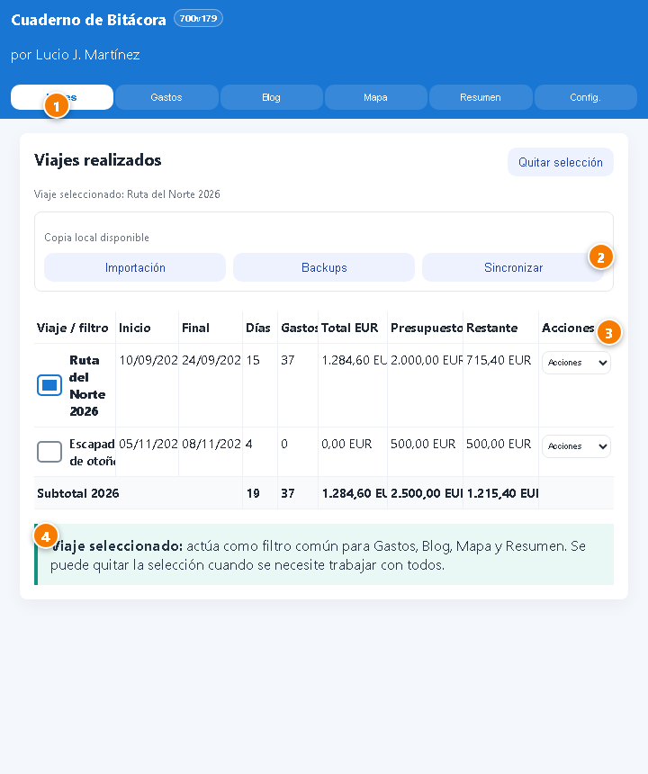
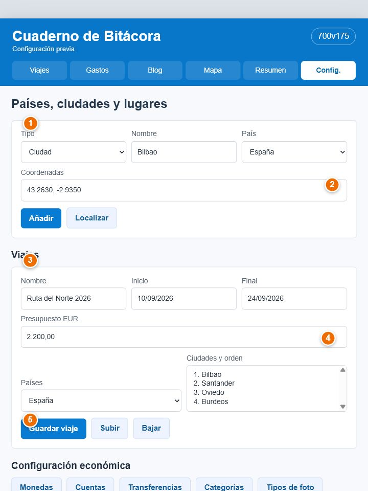
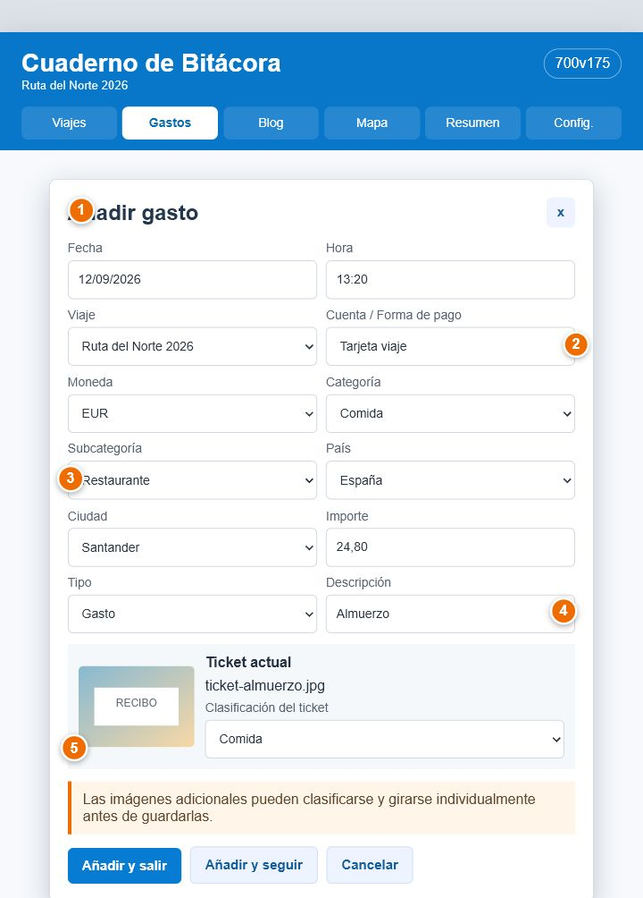
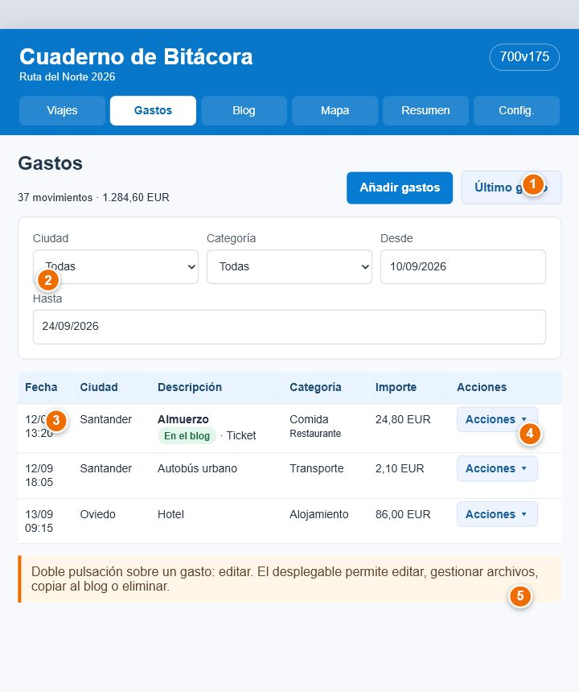
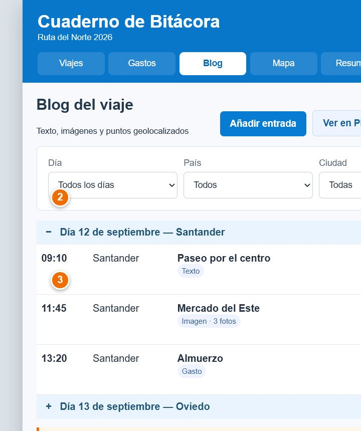
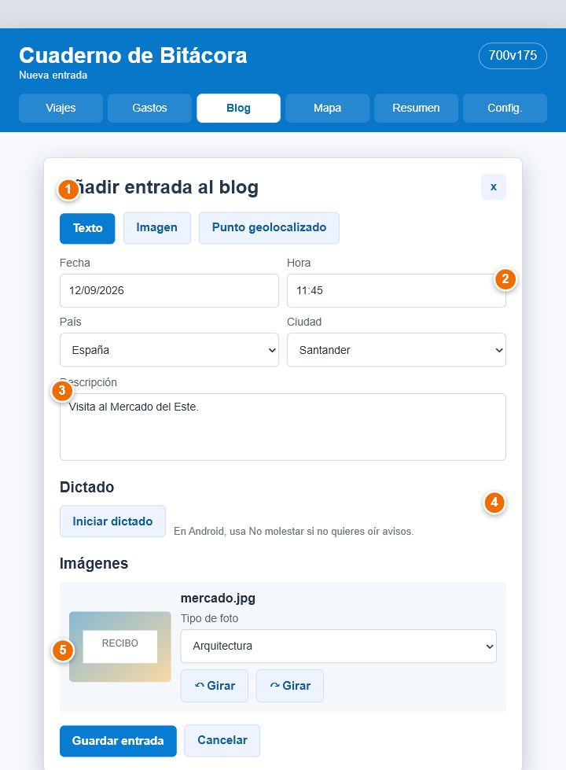
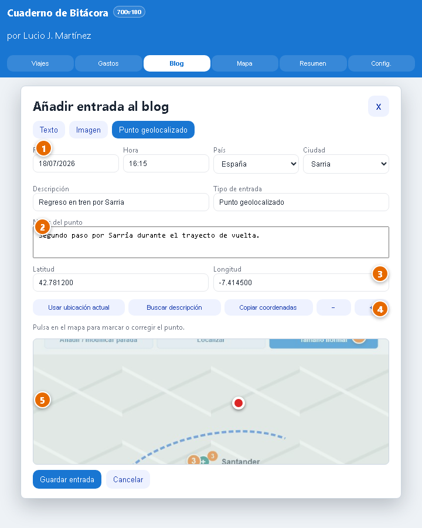
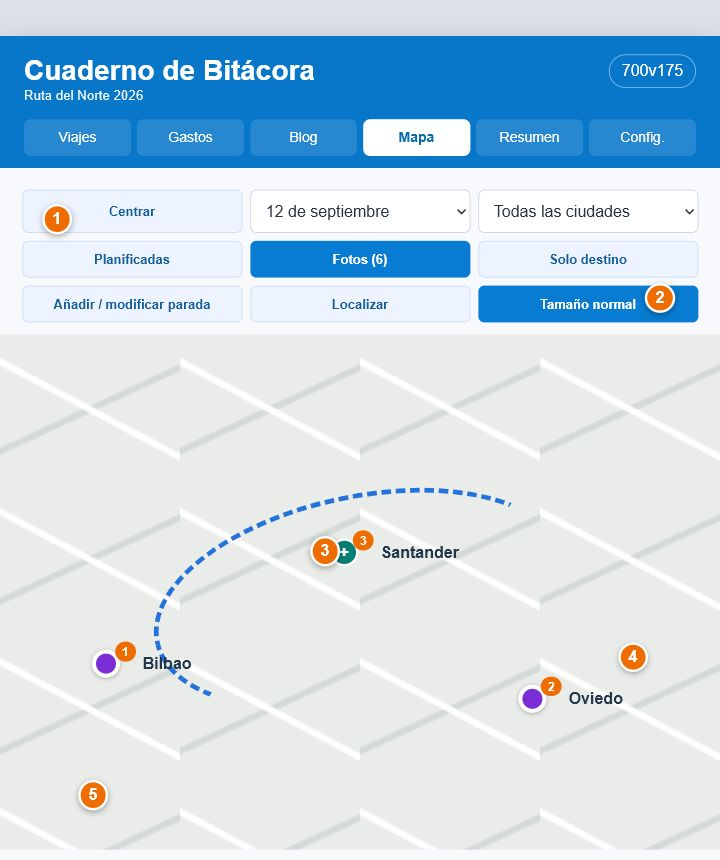
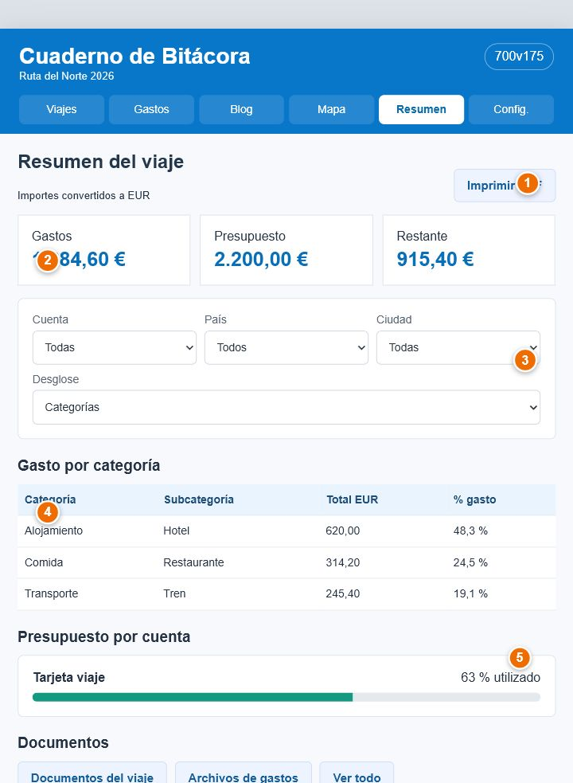

Manual de Cuaderno de Bitácora
Guía para preparar un viaje, registrar gastos y vivencias mientras sucede, conservar la ruta y obtener al final un cuaderno completo con informes, imágenes, mapas y copias de seguridad.
1. Objetivo y filosofía de la aplicación
Cuaderno de Bitácora une dos tareas que normalmente quedan separadas: el control económico del viaje y el relato de lo vivido. La idea es configurar una vez antes de salir, registrar la información con el menor número de pulsaciones durante el viaje y revisar o publicar el resultado al terminar.
2. Flujo de trabajo más eficiente
El método recomendado tiene tres fases: preparar, registrar y cerrar. Así, durante el viaje solo se usan formularios cortos y todo queda relacionado con el viaje correcto.
2.1 Antes del viaje: configurar una vez
- Crear los destinos. En Países / ciudades, añade los países y las ciudades que visitarás. Usa Localizar para guardar coordenadas cuando quieras que aparezcan correctamente en el mapa.
- Preparar la clasificación. Revisa las categorías y subcategorías económicas y las clasificaciones de imágenes y tickets. Marca como destino las clasificaciones que identifican alojamientos.
- Configurar dinero y formas de pago. Crea las monedas necesarias y las cuentas o formas de pago. Introduce saldo inicial y presupuesto cuando quieras controlar lo disponible.
- Crear el viaje. En Crear viaje, indica nombre, fechas, presupuesto, países y el orden previsto de ciudades. Este orden define la ruta planificada y los números de destino.
- Añadir documentación. Desde el desplegable del viaje, abre Documentos viaje y guarda reservas, billetes, seguros u otros archivos que necesites consultar.
- Comprobar y proteger. Ejecuta Revisar viaje, crea una copia JSON y, si trabajarás con varios dispositivos, deja preparada la clave de sincronización.
2.2 Durante el viaje: registrar sin perder tiempo
- Seleccionar el viaje. En Viajes, marca el viaje activo. El Blog solo se habilita cuando hay exactamente uno seleccionado.
- Anotar cada movimiento. Usa Añadir gastos. Para varios gastos seguidos, pulsa Añadir y seguir; se conservarán los datos útiles para el siguiente registro.
- Guardar el justificante. Fotografía o elige el ticket, usa Leer ticket si conviene y asigna una clasificación. Las imágenes adicionales pueden conservar GPS, clasificarse y girarse individualmente.
- Contar lo ocurrido. Añade al Blog texto, imágenes o puntos geolocalizados. Usa En ruta para una huella intermedia del recorrido.
- Reutilizar gastos en el relato. Desde Acciones del gasto, elige Añadir al blog. La aplicación permanece en Gastos y conserva ese registro a la vista para continuar con el siguiente.
- Registrar movimientos entre cuentas. Una recarga, retirada o cambio de divisa se anota como transferencia, no como gasto, porque el dinero solo cambia de cuenta.
- Comprobar el día. Revisa Mapa por día, Resumen, Último gasto y Última entrada. Corrige en el momento ubicaciones, fotos o importes dudosos.
- Hacer copia periódica. Crea una copia completa al final del día o sincroniza cuando tengas conexión.
2.3 Al terminar: revisar, conservar y publicar
- Revisar coherencia. Abre Revisar viaje y resuelve avisos de fechas, ciudades, cuentas, archivos o datos incompletos.
- Comprobar gastos. Usa los filtros y el desglose por categorías, subcategorías, ciudades y cuentas.
- Completar el relato. Ordena y edita las entradas del Blog, selecciona imágenes destacadas y verifica el mapa general y los mapas diarios.
- Generar salidas. Descarga el PDF del Blog, los informes económicos, el CSV o la exportación para WordPress.
- Crear una copia final. Guarda un backup JSON completo fuera del navegador. La sincronización facilita trabajar en varios dispositivos, pero no sustituye una copia independiente.
3. Referencia completa de menús y pantallas
Esta parte describe qué hace cada menú, tabla, campo, desplegable y acción. Las capturas usan datos ficticios y los círculos naranjas se explican debajo de cada imagen.
3.2 Pantalla Viajes
Es la entrada principal. Seleccionar un viaje limita el resto de la aplicación a sus datos y permite abrir el Blog.

- 1Pestaña activa y navegación principal.
- 2Accesos rápidos a importación, backups y sincronización.
- 3Desplegable de acciones propio de cada viaje.
- 4La selección actúa como filtro común.
Tabla de viajes
| Columna | Significado |
|---|---|
| Viaje / filtro | Casilla de selección y nombre. Puede haber varios seleccionados para comparar Gastos o Resumen; el Blog exige uno solo. |
| Inicio / Final | Fechas configuradas. Se usan para días del viaje, revisiones, mapas y cálculos diarios. |
| Días | Duración del viaje calculada entre Inicio y Final, contando ambos días. Por ejemplo, del 10 al 12 son 3 días. El subtotal anual suma los días de todos los viajes de ese año. |
| Media/día | Gasto total del viaje convertido a EUR dividido entre sus días. El subtotal anual divide el gasto total del año entre la suma de días de sus viajes. |
| Gastos | Número de movimientos asociados. |
| Total EUR | Total convertido a euros con los cambios guardados. |
| Presupuesto / Restante | Presupuesto global del viaje y diferencia frente al gasto acumulado. |
| Acciones | Revisar viaje, Documentos viaje y Editar. |
Revisar viaje
Revisar viaje abre un informe rápido sobre la preparación y coherencia del viaje: fechas, destinos, cuentas, archivos, gastos, entradas del Blog, documentos y copia. Los avisos orientan; no modifican datos automáticamente.
Documentos viaje
Guarda reservas, billetes, seguros, PDF e imágenes vinculados al viaje. Cada documento tiene fecha, descripción y archivo. Después puede consultarse en el desplegable del viaje y en las tablas de Documentos del Resumen.
Importación, Backups y Sincronizar
Importación abre directamente la zona de restauración JSON. Backups permite crear, guardar y consultar copias. Sincronizar compara este dispositivo con Netlify. Véase Copias y sincronización.
Volver al índice3.3 Configuración
Conviene completarla antes del viaje. El menú superior de la pantalla enlaza con cada bloque: Países / ciudades, Viajes, Monedas, Cuentas, Transferencias, Categorías, Clasificaciones, Backups y Avanzado.

- 1Alta de país, ciudad o lugar.
- 2Localización y coordenadas.
- 3Datos básicos del viaje.
- 4Selección y orden de ciudades planificadas.
- 5Acceso a la configuración económica y visual.
Países, ciudades y lugares
| Campo / acción | Uso |
|---|---|
| Nombre | Nombre del país o ciudad. Debe ser reconocible en tablas y mapas. |
| Ciudad de | Vacío crea un país; seleccionar un país crea una ciudad dentro de él. |
| Latitud / Longitud | Coordenadas del centro o referencia. Admiten seis decimales. |
| Localizar | Busca las coordenadas del nombre y del país. Necesita conexión. |
| Añadir / Guardar | Crea el lugar o guarda su edición. |
| Ver listado | Despliega el árbol de países y ciudades. Cada elemento permite localizar, editar o eliminar. |
Crear y editar viaje
| Campo / acción | Uso |
|---|---|
| Nombre | Identificador principal del viaje. |
| Fecha de inicio / final | Delimitan el viaje y alimentan los selectores de día, revisiones y medias diarias. |
| Presupuesto EUR | Importe global. Puede coexistir con presupuestos por cuenta. |
| Países creados | Selección múltiple de países que forman parte del viaje. |
| Ciudades planificadas | Ciudades de esos países. El orden define la ruta y los números de destino. |
| Subir / Bajar | Mueve una ciudad en la secuencia. |
| X | Quita la ciudad del viaje sin borrarla de Configuración. |
| Restablecer | Recupera el orden inicial propuesto. |
| Tabla Viajes creados | Muestra viaje, países, fechas y presupuesto. Acciones: Revisar, Documentos, Editar y Eliminar. |
Añadir o modificar paradas
El editor de paradas permite construir la secuencia real del viaje con las ciudades disponibles, repetir una ciudad cuando se vuelve a ella y cambiar el orden. Ese orden determina la ruta del mapa y los números de destino. Guardar ruta actualiza el viaje; Cancelar conserva la secuencia anterior.
Monedas
EUR es la base. Para una moneda extranjera se guardan código ISO, nombre, 1 moneda = EUR y 1 EUR = moneda. Consultar cambio actual busca una referencia online; Usar este cambio copia el resultado al formulario. Solo una moneda con ambas equivalencias puede usarse en cuentas y gastos. La tabla permite editar o eliminar las monedas no base.
Cuentas y formas de pago
| Campo | Uso |
|---|---|
| Nombre | Ejemplos: Efectivo, Tarjeta, Revolut o Cuenta bancaria. |
| Desde plantilla | Parte de una cuenta global ya creada para repetir su configuración. |
| Moneda | Moneda propia de la cuenta. |
| Viaje | Vacío crea una cuenta global; elegir un viaje crea una cuenta específica. |
| Saldo inicial | Dinero disponible antes de gastos y transferencias. |
| Presupuesto | Límite orientativo de esa cuenta. |
| Nota | Información libre sobre el uso de la cuenta. |
| Tabla | Muestra cuenta, viaje, moneda, saldo y presupuesto. Permite editar, eliminar y, cuando procede, migrar. |
Transferencias entre cuentas
Sirven para mover dinero sin considerarlo gasto: recargas, retiradas, traspasos y cambios de moneda. La tabla se muestra desde la fecha más antigua hasta la más moderna.
| Campo / columna | Uso |
|---|---|
| Fecha | Día del movimiento. |
| Cuenta origen (sale) | Cuenta cuyo saldo disminuye. |
| Cuenta destino (entra) | Cuenta cuyo saldo aumenta. |
| Cantidad que sale | Importe descontado en la moneda de origen. |
| Cantidad que entra | Importe recibido. Es opcional si ambas cuentas usan la misma moneda. |
| Cambio | Relación calculada entre lo que sale y lo que entra. |
| Nota | Motivo del movimiento. |
| Acciones | Eliminar la transferencia. |
Categorías y subcategorías
El campo Nombre crea una categoría si ¿Subcategoría de? queda vacío. Si se elige una categoría madre, crea una subcategoría. El árbol permite editar o eliminar. Esta clasificación alimenta filtros, tablas, OCR e informes.
Clasificaciones de imágenes y tickets
Son independientes de la categoría económica del gasto. Los tipos iniciales son Alojamiento, Comida, Paisaje, Ciudad, Retrato y Selfie; cada ticket o fotografía puede guardar después cualquiera de esos tipos u otros nuevos, como Tren o Farmacia. Los tipos se muestran por orden alfabético.
| Control | Uso |
|---|---|
| Nombre | Crea una clasificación reutilizable. |
| Usar como punto de destino | Permite que una foto GPS de ese tipo fije el destino real de la ciudad, especialmente el alojamiento. |
| Editar / Eliminar | Cambia el nombre o retira el tipo. Las clasificaciones se incluyen en backups y sincronización. |
Backups desde Configuración
Los botones abren Exportar / backup, Sincronizar, Exportar CSV, Imprimir / PDF e Importar JSON. Las últimas cinco copias completas permanecen en el dispositivo.
Avanzado
Reducir espacio ocupado recomprime las imágenes ya guardadas en Gastos, Blog y Documentos de viaje; no modifica PDF ni otros documentos. En Avanzado puedes ver cuántos borradores hay y limpiarlos manualmente mediante Limpiar borradores. Reparar / Resetear datos borra caché, service worker y base local; úsalo únicamente tras tener una copia reciente y cuando la aplicación no responda.
Volver al índice3.4 Gastos
Registra gastos, ingresos o devoluciones, con justificantes y fotos. La pestaña respeta el viaje seleccionado.
Formulario Nuevo gasto

- 1Fecha, hora y viaje.
- 2Cuenta y moneda asociada.
- 3Categoría, subcategoría, país y ciudad.
- 4Importe, tipo y descripción.
- 5Ticket, clasificación e imágenes adicionales.
| Campo / acción | Comportamiento |
|---|---|
| Fecha y Hora | Se propone la fecha y hora actual. Determinan el orden cronológico. |
| Viaje | Asocia el movimiento. Es necesario para añadirlo después al Blog. |
| Cuenta / Forma de pago | Selecciona la cuenta y propone su moneda. |
| Moneda | Moneda original. Debe tener equivalencias si no es EUR. |
| Categoría / Subcategoría | Clasificación económica usada por filtros e informes. |
| País / Ciudad | Destino del gasto. La ciudad se limita a las planificadas o ya usadas en el viaje y recuerda la última del día. |
| Importe | Valor en la moneda seleccionada. |
| Tipo | Gasto descuenta; Ingreso / devolución se guarda como importe negativo y reduce el total gastado. |
| Descripción | Cuadro amplio de varias líneas para identificar el movimiento y revisar el texto completo mientras se escribe. Después permite localizarlo mediante los filtros. |
| Elegir archivo / Cámara | Añade un ticket como imagen o PDF. |
| Leer ticket | Lee el justificante y propone comercio, fecha, hora, importe, categoría y subcategoría cuando los reconoce con claridad. Admite tickets comerciales y justificantes de tarjeta, y entiende etiquetas habituales en español, catalán, inglés, finés y otros idiomas europeos. Al editar un gasto completa solo los campos vacíos; no sustituye datos existentes ni rellena un importe dudoso. Revisa siempre el resultado antes de guardar. |
| Clasificación del ticket | Tipo visual independiente de la categoría económica. |
| Imágenes adicionales | Admite varias fotografías. Cada una puede conservar GPS, recibir clasificación y añadirse al mapa. |
| Añadir y salir | Guarda y cierra. |
| Añadir y seguir | Guarda y prepara otro gasto conservando el contexto útil. |
| Cancelar / X | Cancelar descarta el borrador; la X cierra y permite recuperarlo después. Los archivos deben elegirse de nuevo. |
Lista, filtros y acciones

- 1Alta y acceso al gasto más reciente.
- 2Filtros de la lista.
- 3Cabeceras diarias plegables en la vista Tabla.
- 4Indicadores de ticket y de paso al Blog.
- 5Desplegable Acciones y doble pulsación para editar.
Filtros
Se puede filtrar por moneda, cuenta, viaje, país, ciudad, categoría, subcategoría, fecha desde, fecha hasta y texto de la descripción. Vista alterna tabla y tarjetas. En Tabla, cada día se abre con + y se cierra con −; inicialmente queda abierto el día más reciente. Sus gastos y su subtotal se pliegan juntos. La vista Tarjetas mantiene todos los movimientos visibles. Quitar filtros restaura la lista completa. Último gasto abre su día si hace falta y lleva al movimiento más reciente del resultado filtrado.
Columnas
Hora, Ciudad, Categoría, Subcategoría, Cuenta, Moneda, Importe, equivalencia EUR, Descripción y Acciones. Cada cabecera identifica el día, la ciudad de destino y los países del grupo, sin repetir el nombre del viaje. Si durante el día hay gastos en varias ciudades, se toma como destino la última ciudad registrada cronológicamente. El pie muestra el total del filtro. La impresión incluye todos los grupos filtrados, aunque alguno esté plegado en pantalla.
Desplegable Acciones
| Opción | Efecto |
|---|---|
| Archivos | Abre el ticket y todas las imágenes del gasto para consultarlas. La edición del gasto permite además clasificarlas, girarlas, sustituirlas o quitarlas. |
| Añadir al blog / Actualizar blog | Crea o actualiza la entrada enlazada. Si ya existe, Aceptar reemplaza datos conservando fecha y hora editadas en el Blog; No aceptar reemplaza también fecha y hora; Cancelar no cambia nada. |
| Editar | Abre todos los campos y permite sustituir, quitar, clasificar o girar tickets e imágenes. |
| Duplicar | Crea un nuevo formulario a partir del gasto actual. |
| Eliminar | Borra el movimiento tras confirmación. |
Una doble pulsación sobre la fila equivale a Editar. Después de editar o pasar un gasto al Blog, la aplicación abre el día correspondiente, vuelve al mismo registro y deja su desplegable localizado para continuar.
Volver al índice3.5 Blog
Ordena el relato por fecha y hora. Admite gastos, textos, imágenes y puntos. Solo funciona con exactamente un viaje seleccionado.
Tabla y días plegables

- 1Alta, última entrada, PDF y WordPress.
- 2Filtros por día, país y ciudad.
- 3Cabecera plegable de cada día.
- 4Acciones de la entrada.
- 5Conservación de posición tras editar.
Las columnas son Hora, Ciudad, Descripción, Tipo, País, Precio, WordPress y Acciones. El último día queda abierto inicialmente; los anteriores pueden abrirse con + y cerrarse con −.
| Control / opción | Uso |
|---|---|
| Añadir entrada | Abre el selector Texto, Imagen o Punto geolocalizado. |
| Última entrada | Abre el día necesario y lleva a la última entrada visible con los filtros actuales. |
| Vista / PDF | Genera una vista HTML adaptable con las entradas que cumplen los filtros activos y abre el guardado en PDF. La guía previa recuerda que, en Android, hay que dejar seleccionado Guardar como PDF, pulsar el botón redondo con el icono PDF, elegir carpeta y confirmar con Guardar; seleccionar solamente la opción superior no crea aún el archivo. Al cerrar el cuadro de impresión, la vista HTML permanece y ofrece Compartir HTML, Descargar HTML e Imprimir / PDF. Para enviar la vista se usa Compartir HTML, no el menú de Chrome, que solo compartiría la dirección temporal about:blank. Sin filtros, incluye el relato completo. |
| PDF del día | El botón inferior toma el día que está desplegado y genera únicamente sus entradas, sin obligar a volver arriba ni a cambiar el filtro. Si hay varios días abiertos, utiliza el último que se desplegó. Este PDF diario no añade la portada general ni otros días. |
| WordPress | Elige días y descarga un archivo con un post borrador por día. |
| Filtros | Día, país y ciudad. Se pueden combinar y determinan tanto las entradas visibles como el contenido de Vista / PDF. |
| Compartir como PDF | Genera en el teléfono un PDF real con la fecha, lugar, descripción, texto o importe y las imágenes de la entrada. Si el contenido es largo, lo divide automáticamente en páginas A4. Android recibe únicamente el archivo PDF con nombre propio, sin mezclarlo con la dirección de la página, para enviarlo a WhatsApp o guardarlo en Drive. Si Android no acepta compartir el archivo, la aplicación descarga directamente el PDF sin abrir una vista temporal about:blank; solo comparte o copia texto cuando tampoco puede crear el PDF. |
| Mostrar punto / Editar / Eliminar | Localiza el punto cuando existe, abre el formulario o borra la entrada. |
Una doble pulsación equivale a Editar. Tras guardar, la misma entrada vuelve a quedar seleccionada en su posición anterior.
Formulario Añadir entrada
Al abrir el formulario se elige Texto, Imagen o Punto geolocalizado. Después de elegir, el cuadro cambia y el botón i abre directamente la explicación de ese tipo.
Los tres tipos comparten Fecha, Hora, País, Ciudad, Descripción, inclusión en WordPress y los botones Guardar entrada y Cancelar. Fecha y hora ordenan el relato; país y ciudad alimentan los filtros y el mapa; la descripción es un título breve de hasta 240 caracteres.
| Acción común | Uso |
|---|---|
| Ciudad | Permite elegir una ciudad del viaje, dejar (sin ciudad) o marcar En tránsito cuando la entrada sucede durante un desplazamiento. En tránsito se conserva como tal en la tabla, los encabezados, filtros, PDF, compartir y WordPress. |
| En ruta | Convierte la entrada en una huella intermedia del recorrido. Una imagen puede usar su GPS; un texto sin GPS requiere introducir una ubicación manual. |
| Incluir en WordPress | Incluye o excluye la entrada del post correspondiente a ese día. |
| Guardar entrada | Valida los campos específicos del tipo, guarda los cambios y vuelve a la misma entrada de la tabla. |
| Cancelar / X | Cancelar descarta el borrador; X cierra conservando el texto del borrador, pero no los archivos elegidos. |
Entrada de Texto
Añade una narración sin imagen obligatoria. El campo Texto admite el contenido extenso y Descripción actúa como título en la tabla, PDF y WordPress.
| Campo / acción | Uso |
|---|---|
| Texto | Relato completo de lo ocurrido. Es obligatorio en este tipo de entrada. |
| En ruta | Permite usar el texto para ajustar la ruta. Pulsa Añadir ubicación manualmente e introduce latitud y longitud; la aplicación no toma automáticamente la posición del teléfono. |
Entrada de Imagen o galería

- 1Tipo Imagen y datos comunes.
- 2Archivo, varios archivos o cámara.
- 3Primera imagen y vista previa.
- 4Clasificación, giro, mapa y Quitar.
- 5Guardar o cancelar.
| Campo / acción | Uso |
|---|---|
| Archivo (con GPS) | Elige una fotografía desde Archivos. En Android es la vía más fiable para conservar el GPS original. |
| Varios archivos | Crea una galería. La fecha y la hora pueden proponerse desde los metadatos de la primera fotografía. |
| Cámara | Toma una foto nueva y, si Android lo permite, asocia la ubicación actual. |
| Primera imagen | Toca una miniatura para convertirla en primera. Es la que se gira y la que se usa como destacada. |
| Tipo de foto | Clasificación individual de cada imagen. Una clasificación configurada como destino puede determinar el alojamiento o destino real del mapa. |
| Girar | Gira la primera fotografía. Para girar otra, conviértela antes en primera. |
| Quitar | Marca una fotografía para eliminarla de la entrada al guardar. Si era la primera, la siguiente pasa a ocupar ese lugar. |
| Usar como imagen destacada | Usa la primera fotografía como cabecera del día y obliga a incluir la entrada en WordPress. |
| Añadir las fotos al mapa | Incluye las fotografías que tengan GPS. Las que no tengan coordenadas no desplazan la ruta. |
| En ruta | Usa el GPS de una imagen para afinar el trayecto. Si ninguna lo tiene, permite añadir una ubicación manual. |
| Guardar original en Fotos | Conserva además el archivo original cuando el navegador lo permite. La copia guardada en la aplicación tiene un objetivo aproximado de 650 KB. |
Entrada de Punto geolocalizado

- 1Tipo Punto y datos comunes.
- 2Notas del punto.
- 3Latitud y longitud.
- 4Ubicación actual, búsqueda, copia y zoom.
- 5Selección directa sobre el mapa.
| Campo / acción | Uso |
|---|---|
| Notas del punto | Información extensa sobre el lugar; la descripción sigue siendo su título breve. |
| Latitud / Longitud | Coordenadas exactas. Se pueden escribir o corregir manualmente. |
| Usar ubicación actual | Al crear un Punto, la búsqueda GPS comienza automáticamente y el formulario baja hasta el mapa. Un diálogo indica Buscando localización y termina con Punto localizado o Punto no encontrado. La aplicación conserva la mejor lectura recibida durante varios segundos para mejorar el resultado cuando el teléfono está en movimiento. El GPS no necesita datos móviles, aunque puede tardar más dentro de un tren o edificio. |
| Buscar descripción | Busca la descripción junto con la ciudad y el país; hay que comprobar el resultado en el mapa. |
| Copiar coordenadas | Copia latitud y longitud para revisarlas o reutilizarlas. |
| − / + y mapa | Los controles permiten acercar o alejar. También se puede arrastrar el mapa, usar la rueda del ratón o ampliar y reducir con dos dedos. Un toque breve coloca o corrige el punto. |
| Punto cercano existente | Si ya hay otro punto del viaje a menos de 30 metros, la aplicación muestra su nombre y distancia. Aceptar reutiliza exactamente sus coordenadas en la nueva entrada; cancelar permite escoger otro lugar. |
En ruta y puntos geolocalizados
En ruta convierte una entrada de texto, imagen o punto en una huella intermedia para afinar el recorrido. Requiere coordenadas válidas: se leen del GPS de la imagen o se introducen manualmente. La aplicación nunca asigna automáticamente la ubicación actual a un texto o una imagen sin GPS. Los puntos cercanos pueden reutilizarse de forma deliberada para representar un nuevo paso por el mismo lugar sin tener que alejarse físicamente.
WordPress
La primera vez, descarga el importador desde el diálogo WordPress, instálalo en WordPress → Plugins → Añadir plugin → Subir plugin y después usa Herramientas → Importar Gastos de Viaje. Cada día se importa como borrador para revisarlo antes de publicar.
Volver al índice3.6 Mapa
Combina la ruta planificada con ciudades, gastos, puntos del Blog y fotografías GPS. Los trayectos se representan mediante líneas rectas discontinuas. El mapa interactivo usa cartografía vectorial; los mapas copiados al Blog o incluidos en PDF se generan como imagen.
Para mantener el mapa despejado, las fechas no se escriben junto a los marcadores: se muestran al pulsar el punto o la ciudad. Un punto geolocalizado cuya descripción contenga tren, coche, bus o avión sustituye el marcador por un pequeño icono de ese transporte, sin aumentar el espacio ocupado. El tren se representa de perfil con una locomotora inspirada en la portada. Al pulsar el icono aparecen su descripción, lugar, fecha, hora y las notas del punto cuando existan.

- 1Centrar y filtros de día o ciudad.
- 2Capas y modos de visualización.
- 3Signo + de fotos y contador naranja.
- 4Ciudad o destino con nombre.
- 5Área interactiva del mapa.
Controles
| Control | Uso |
|---|---|
| Centrar | Reencuadra los puntos visibles. |
| Día | Todos los días o una fecha concreta con actividad. |
| Ciudad | Todas o una ciudad. Día y Ciudad son filtros alternativos. |
| Copiar al Blog | En un día crea o actualiza el mapa diario a las 00:00 y mantiene ese día seleccionado para continuar trabajando con los días consecutivos; en vista general crea o actualiza la portada del viaje con mapa y ciudades. |
| Planificadas | Muestra u oculta la ruta prevista. |
| Fotos (n) | Muestra u oculta las fotografías. El número indica cuántas hay en la vista. |
| Solo destino | Centra la zona intermedia y omite la primera y última parada con sus elementos. |
| Añadir / modificar parada | Edita la ruta a partir de las ciudades planificadas, admite repeticiones y conserva el orden. |
| Localizar | Busca coordenadas que falten. Necesita conexión. |
| Pantalla completa / Tamaño normal | Amplía el mapa en móvil y vuelve al tamaño original. |
| − / + | Aleja o acerca. El gesto de pellizco también controla el zoom. |
Marcadores, colores y números
| Marca | Significado |
|---|---|
| + morado | Ciudad o destino del día. |
| + verde | Foto o grupo de fotos geolocalizadas. Al pulsarlo aparece un bocadillo con miniaturas, fecha, hora y descripción. |
| Contador naranja | Número de fotos agrupadas, no número de destino. |
| Distintivo rojo | Número de la ciudad en la ruta planificada. En visitas repetidas puede mostrar varios números unidos por guion. |
| Nombre de ciudad | Aparece en negrita junto a su número o junto al + morado. |
| Línea azul discontinua | Orden cronológico o planificado del recorrido. |
Mapa por día
Incluye todas las fechas con gastos o Blog. Combina GPS exacto con la ciudad de los registros que no lo tienen. Las fotos marcadas «En ruta» se incorporan al trayecto mediante sus coordenadas GPS exactas; las demás permanecen visibles sin desviar la línea. Los puntos del día se muestran sin números de parada.
Mapa por ciudad
Reúne los puntos y fotos de esa ciudad durante todos los días, sin línea de trayecto.
Todos los días
Muestra la ruta completa. Las llegadas se deducen de entradas y fotos; los gastos sirven como alternativa dentro de las fechas del viaje. Las fotografías repetidas entre Gastos y Blog se representan una sola vez.
Destino real
Una foto GPS cuya clasificación está marcada como destino tiene prioridad como destino real de la ciudad frente a sus coordenadas generales. Si hay varias visitas, se elige la foto más próxima a la llegada. Para las fotos antiguas sin clasificar se conserva como respaldo la regla del gasto de Alojamiento.
Volver al índice3.7 Resumen
Convierte importes, compara presupuesto y gasto, permite contrastar dos viajes, desglosa resultados y reúne los documentos del viaje.

- 1Acceso a Imprimir PDF.
- 2Gasto, presupuesto y restante.
- 3Filtros y tipo de desglose.
- 4Tablas por categoría o cuenta.
- 5Documentos del viaje y archivos de gastos.
| Área | Contenido |
|---|---|
| Indicadores | Total EUR, total en divisas cuando existe, media diaria, presupuesto, restante y porcentaje consumido. |
| Comparar dos viajes | Contrasta dos viajes completos mediante totales, duración, media diaria, presupuesto, categorías y subcategorías. |
| Filtros | Moneda original, cuenta, viaje, país y ciudad. |
| Desglose | Categorías, subcategorías o ciudades. |
| Tabla por categoría | Categoría, subcategoría, total EUR y porcentaje del gasto. |
| Tabla por cuenta | Cuenta, moneda, gastado, equivalencia EUR, presupuesto, restante y porcentaje. |
| Imprimir PDF | Abre las opciones Resumen, Gastos o Todo. |
Comparar dos viajes
El botón Comparar abre esta zona y, al pulsarlo de nuevo o elegir otra zona del Resumen, la oculta. El viaje principal se propone inicialmente tomando el viaje con la fecha final más reciente, pero puede cambiarse libremente. Comparar con permite elegir un único segundo viaje; nunca se agregan tres o más viajes en esta vista. Ambos selectores son independientes de las casillas marcadas en Viajes y abarcan todo el historial, por lo que se puede comparar un destino con otra visita realizada en un año distinto. El nombre de cada opción incluye su año para distinguir viajes repetidos.
La tabla general muestra gasto total, duración, media diaria y, cuando existe, uso y restante del presupuesto. La diferencia se calcula como viaje principal menos viaje comparado. La tabla económica contrasta cada categoría en total, porcentaje del viaje y gasto por día; la columna Diferencia repite esos tres niveles mediante el importe, los puntos porcentuales del viaje y los euros por día. Pulsar el signo + de una categoría despliega sus subcategorías con el mismo detalle. El botón ⇄ intercambia cuál de los dos viajes actúa como principal. En móvil, el porcentaje y la media diaria aparecen debajo del importe de cada viaje para mantener visibles a la vez el concepto, ambos viajes y la diferencia.
Documentos
Al final aparecen dos tablas: Documentos del viaje y Archivos de gastos. Se ordenan de más antiguos a más recientes y cada fila muestra fecha, descripción y enlace para abrir el archivo.
Volver al índice3.8 Compartir desde Android
Cuaderno de Bitácora puede aparecer en el menú Compartir del teléfono.
| Contenido recibido | Resultado |
|---|---|
| Una o varias imágenes | Permite elegir viaje y destino: nueva entrada del Blog o nuevo gasto. Antes se puede corregir la descripción. |
| Texto seleccionado | Permite elegir viaje y abre una entrada de tipo Texto para revisarla. |
| Archivo TXT | Se trata como texto compartido y se revisa antes de guardar. |
| Archivo incompatible | La aplicación informa de que no puede tratarlo; no se guarda como imagen. |
Al recibir contenido, la aplicación mantiene una única pantalla de preparación mientras recupera la imagen, crea la miniatura y comprueba el GPS. El selector de destino solo aparece cuando esos datos están listos.
Android decide qué metadatos entrega. Para conservar GPS en fotos antiguas, suele ser más fiable elegirlas desde Archivos → Almacenamiento interno → DCIM → Camera.
Volver al índice3.9 Informes, PDF, CSV y WordPress
Imprimir / PDF económico
Ofrece tres salidas: 1. Resumen, 2. Gastos y 3. Todo. Usa los filtros activos cuando corresponde. Los informes incluyen tablas, gráficos y mapa.
Exportar CSV
Genera una tabla de movimientos con Fecha, Hora, Viaje, Categoría, Subcategoría, Cuenta, Moneda, Importe, EUR, Descripción y Archivos. Usa UTF-8 con BOM para abrir correctamente los acentos en Excel.
PDF del Blog
El PDF respeta los filtros activos del Blog: día, país, ciudad o cualquier combinación de ellos. Solo incluye las entradas mostradas por esa selección; si no hay filtros, incluye el relato completo. Cuando el Blog contiene la portada general, esta se mantiene como primera página con el mapa y la lista de ciudades del viaje aunque haya filtros. Preparativos Viaje solo aparece si existen entradas anteriores al inicio que cumplen la selección activa; nunca se crea como página vacía. No se añade un mapa geolocalizado automático al final.
WordPress
Exporta un post por día, inicialmente como borrador, con texto, imágenes, destacados y puntos. Requiere instalar el importador incluido en la aplicación.
PDF de esta ayuda
El botón Descargar PDF de la parte superior guarda este manual completo. El botón Imprimir permite elegir una impresora o la opción del navegador para guardar otra copia PDF.
Volver al índice3.10 Copias de seguridad y sincronización
Crear y guardar copia
| Control | Uso |
|---|---|
| Exportar | Todos los viajes o un viaje. |
| Viaje | Destino de la exportación parcial. |
| Crear y guardar copia | Genera un JSON con datos y archivos. Puede preguntar si también se guarda en Netlify. |
| Elegir carpeta | Fija una carpeta compatible para futuras copias. Android puede volver a pedir permiso. |
| Olvidar | Retira la carpeta fijada sin borrar sus archivos. |
| Últimas copias | Historial de las cinco copias completas locales más recientes. |
Los nombres incluyen fecha, hora y milisegundos para evitar sustituciones. Durante una copia se muestra el progreso y se impide iniciar otra simultáneamente.
Importar JSON
Puede importar todos los viajes o un viaje en un destino seleccionado. Lee con atención el resumen antes de confirmar: importar modifica la base local. Conviene crear una copia previa.
Sincronizar con Netlify
| Control / dato | Uso |
|---|---|
| Clave de acceso | Identifica el espacio de copias. Debe ser exactamente la misma en todos los dispositivos. |
| Mostrar / Copiar / Cambiar clave | Gestiona la clave. Cambiarla abre otro espacio y no borra el anterior. |
| Copia en la nube | Fecha de guardado y fecha real de modificación de sus datos. |
| Última copia local | Fecha equivalente en este dispositivo. |
| Comprobar de nuevo | Actualiza la comparación antes de decidir. |
| Actualizar desde la nube | Descarga la versión remota, con copia local de protección. Mientras trabaja muestra un modal destacado Sincronizando desde la nube, que impide cerrarlo accidentalmente y desaparece al terminar o si ocurre un error. |
| Guardar versión local en la nube | Sube los cambios locales tras comprobar que la nube no ha cambiado. |
La aplicación recuerda la última sincronización confirmada de este dispositivo. Si han cambiado el dispositivo y la nube desde entonces, se muestra un conflicto y ambas opciones. La comparación usa la fecha de modificación de los datos, no solo la fecha del archivo. Antes de subir, comprueba que la copia de la nube no haya cambiado mientras se prepara el envío; si cambió, cancela la subida y pide comprobar de nuevo. Tickets, documentos e imágenes se identifican por huella y no se vuelven a subir si ya existen; los archivos grandes se dividen y reconstruyen automáticamente.
3.11 Sin conexión, borradores, actualización y reparación
Uso sin conexión
Después de haber instalado o cargado correctamente la versión actual, la aplicación conserva sus recursos principales y puede abrirse sin Wi-Fi ni datos. La versión almacenada se abre antes de intentar consultar la red y la comprobación de Netlify se realiza después, sin bloquear la entrada. En la portada aparece Sin conexión · entrando con datos locales y, ya dentro, queda visible el aviso de trabajo local. Gastos, Blog, Configuración y datos locales siguen disponibles. Los mapas ya vistos se conservan en caché en la medida que el navegador lo permite.
| Función | Sin internet |
|---|---|
| Abrir la aplicación ya instalada | Sí, con la versión almacenada. |
| Crear y editar datos | Sí. |
| Leer tickets | Sí, una vez cargada por completo la versión actual; el enderezado y el OCR funcionan localmente. |
| Mapas ya vistos | En la medida en que el navegador conserve sus recursos. |
| GPS del teléfono | Sí; puede obtener la posición sin datos móviles, aunque la primera lectura puede tardar. |
| Mapas nuevos, buscar descripciones y tipos de cambio | No; consultan servicios externos. |
| Sincronización y copia en Netlify | No; requieren conexión. |
Borradores
Nuevo gasto, nueva entrada del Blog y formularios de Configuración guardan automáticamente lo escrito en ese navegador. Reabrir restaura el borrador. Guardar lo elimina; Cancelar lo descarta; X cierra conservándolo. Caducan a los 30 días. Por seguridad, los archivos, tickets y fotos seleccionados no se guardan como borrador y deben elegirse de nuevo.
Actualización de versión
Al detectar una versión nueva, la aplicación actualiza sus recursos y puede recargarse una vez. La portada muestra versión y fecha. Si se ve primero la anterior y después la nueva, deja terminar la carga; las versiones actuales evitan recargas repetidas siempre que el navegador no conserve una caché dañada.
Reparar / Resetear datos
Usa primero Reducir espacio ocupado o cierra y abre la aplicación. Si el problema continúa, crea un backup y solo entonces utiliza Reparar / Resetear datos. Después tendrás que importar la copia.
Volver al índice